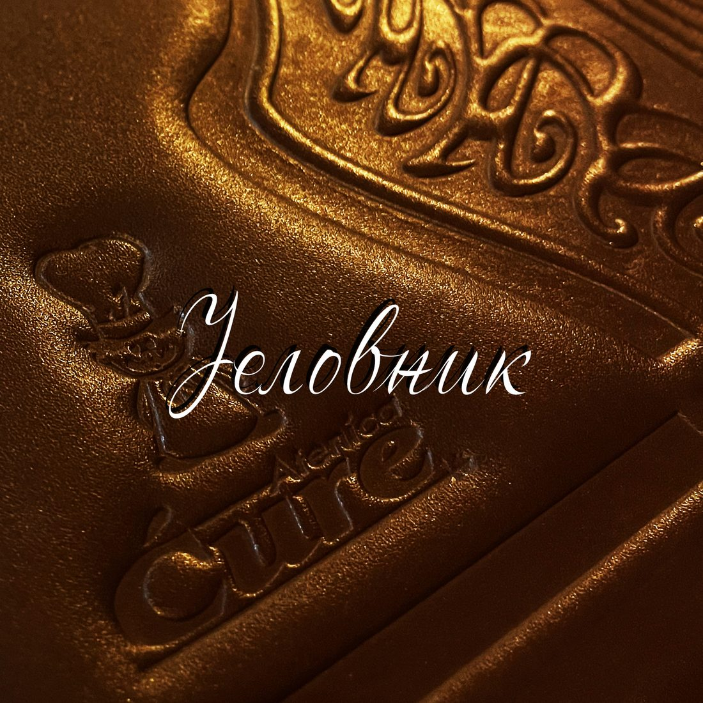
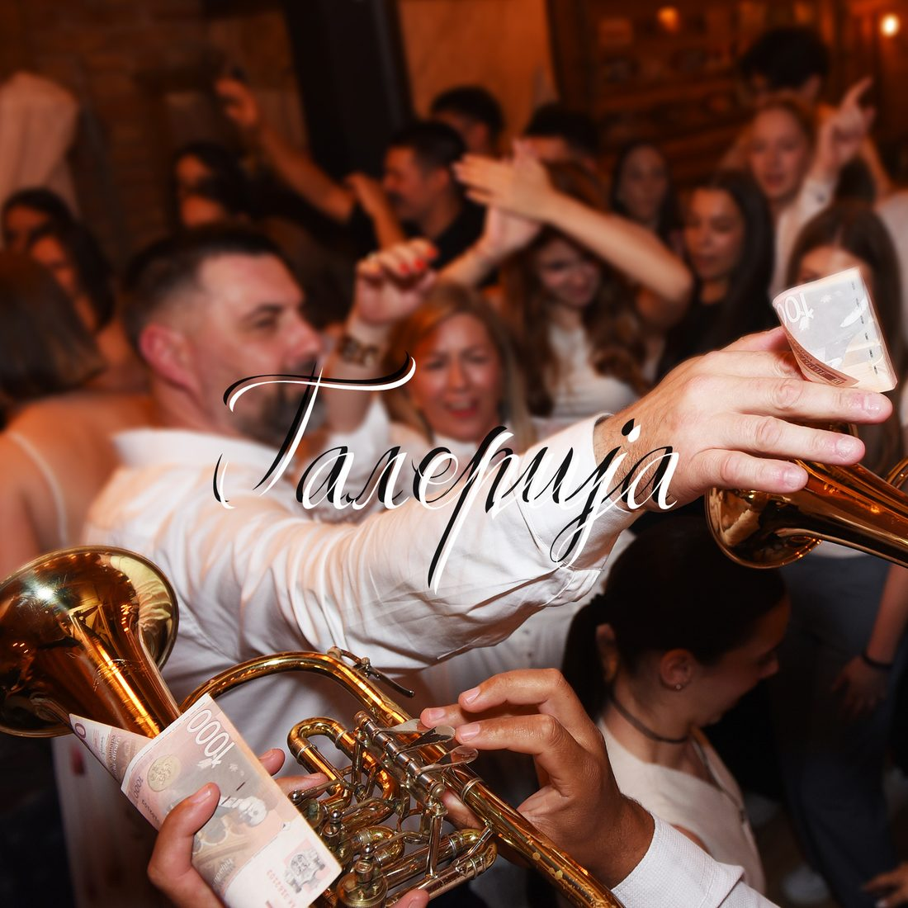
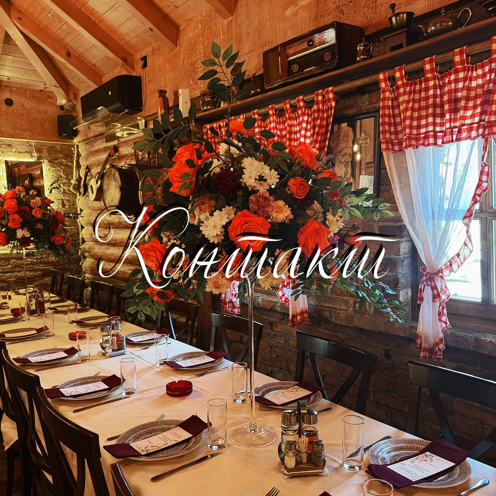
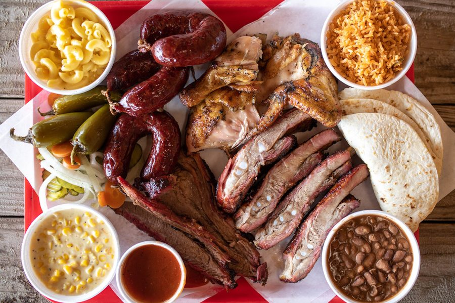
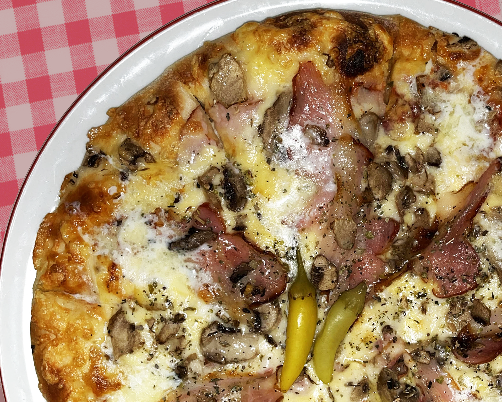
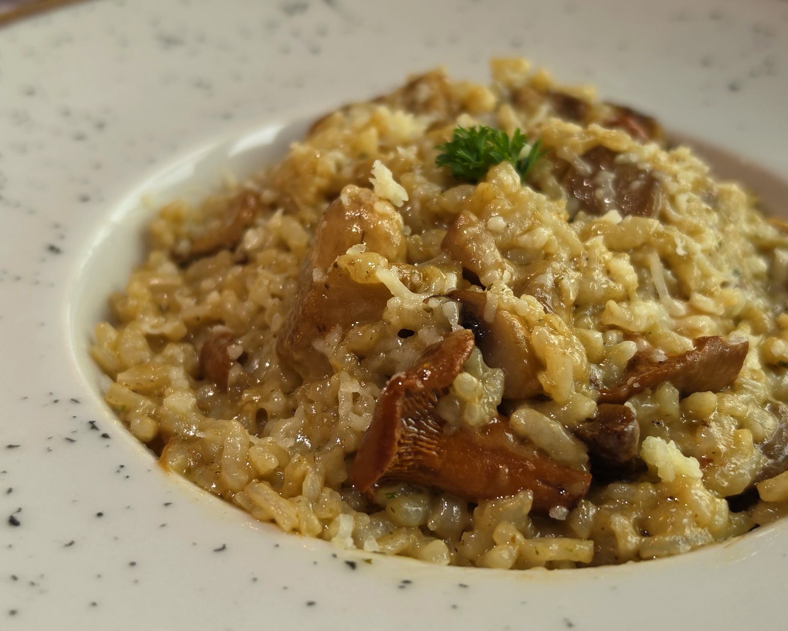

Добро дошли код Ћурета!

Надалеко смо најпознатији по одличном роштиљу печеном на ћумуру, разноврсном посном јеловнику, а од недавно у понуди имамо и италијанску кухињу прилагођену домаћим укусима.

Проверите зашто смо најпопуларније место за организовање прослава до 130 гостију. Староградска и народна музика, одлична храна, повољно пиће и најбоља услуга.

За све потребне информације, доставу хране, резервисање места у ресторану, не устручавајте се да нас позовете, стојимо Вам на услузи.
Традиција дуга 19 успешних година

Свака добра прича почиње једноставно. Наша је почела 2007. године, у малој кафани у Атеници, са двадесетак места, једним роштиљем и великом жељом да направимо место у које ће људи долазити због хране, али се враћати због осећаја да су увек добродошли.
Са пријатељима

Наша препорука

Мешано месо са роштиља
Мешавина одабраних комада меса печеног на ћумуру, где ће свако наћи оно што му највише милује непца. Јело које нас је створило.

Пица Србијана
Српски приступ италијанском класику, са сланином, шампињоним и домаћим кајмаком. Наша најпродаванија пица.

Рижото са печуркама
Кремасти рижото од Арборио пиринча са мешавином шумских печурака, пармезаном и уљем од тартуфа. Најновији додатак нашем јеловнику.